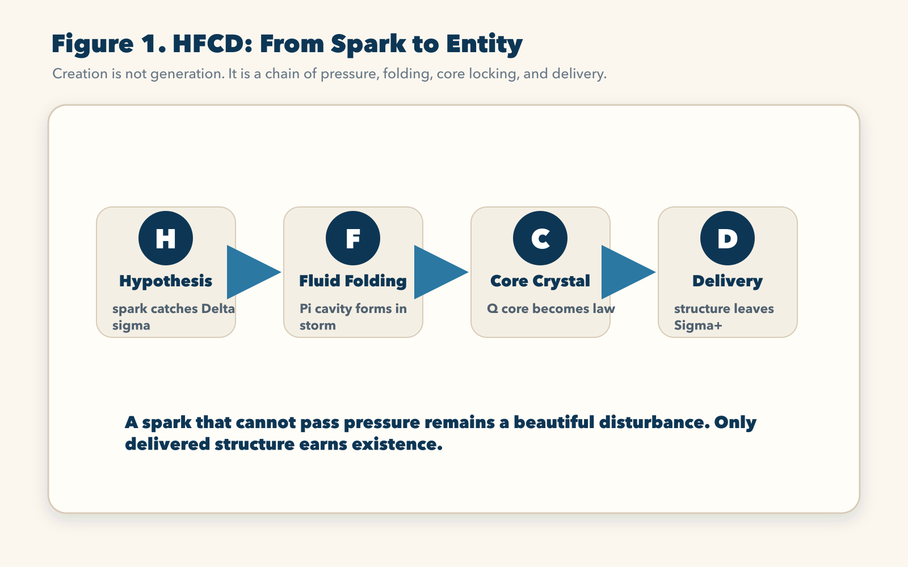
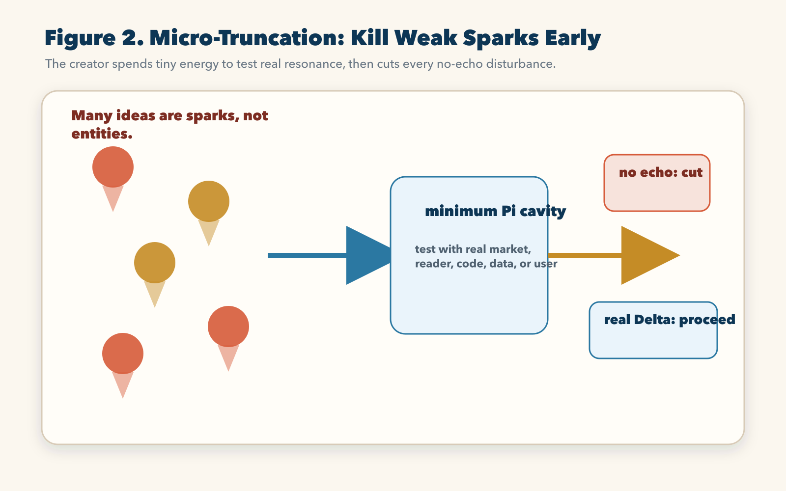
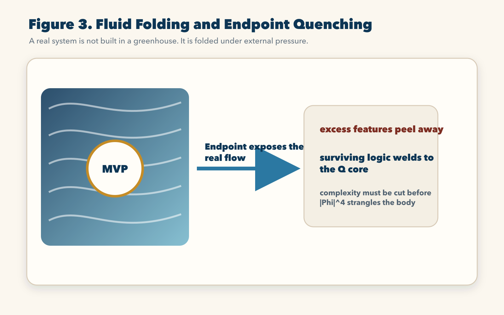
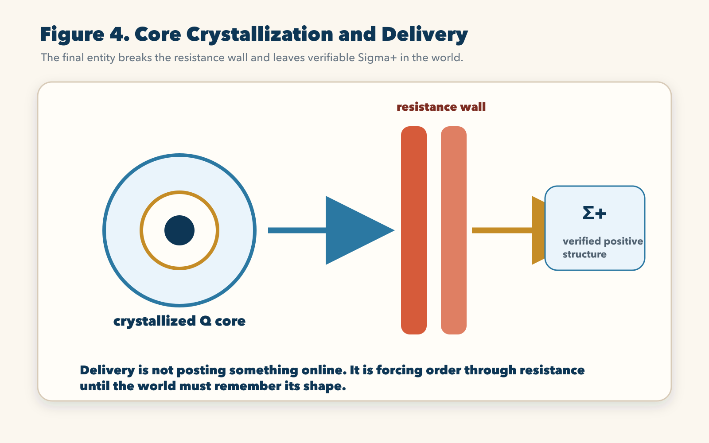

Chapter 7 | From Spark to Entity: The Cruel Trial Called HFCD
Creation has become cheap on the surface.
Type a prompt, and a page appears. Type another prompt, and a picture appears. Type a third prompt, and a software skeleton appears. The modern person sits before a screen and feels a dangerous intoxication: the world seems to have become obedient. Words turn into images. Images turn into mockups. Mockups turn into code. Code turns into a demo. A demo turns into a fantasy of company, product, influence, wealth, and destiny.
This is the carnival of virtual creation.
It is also a mass grave.
Anyone who has truly tried to build a system that survives outside the prompt window knows the next blow. The generated code refuses to run. The project crashes. A dependency breaks. The front end looks beautiful but the data layer is hollow. The model writes confident nonsense. The first users do not care. The market does not echo. A video receives no signal. A trading strategy shines in a backtest and dies in live flow. A brilliant plan collapses the moment it touches real data.
Old thinking calls this a bug, bad luck, insufficient effort, poor timing, or a platform problem.
Core-Mode calls it by its physical name:
the geometry of generation was torn apart by the luminous background sea.
The text you entered was not yet an entity. It was only a weak disturbance, η, a spark without a Q core and without a stable Π relation cavity. When it tried to connect directly to the vast, non-linear, pressure-filled code sea of reality, the background tore it into fragments. The system did not hate you. The universe simply refused to grant existence to a shape that had not been quenched.
Generation is not creation.
Generation produces appearance.
Creation produces a structure that can survive pressure, translate state, defend its core, pay dissipation, and leave Σ+ behind.
This is the entrance to HFCD.
HFCD means High-Frequency Core-Mode Delivery. Do not read it as a management term. It is a generation chain. It describes how a spark becomes an entity through four physical phases: H, F, C, and D.
H is Hypothesis: the birth of a spark from a real Δσ.
F is Fluid Folding: the violent formation of a Π cavity in the storm.
C is Core Crystallization: the locking of the Q core into a law that cannot be casually bent.
D is Delivery: the geometric penetration through resistance, leaving positive integrated structure, Σ+.
Inside these phases are the seven death gates. They do not ask whether the idea sounds beautiful. They ask whether it can survive: identity, external resonance, minimum cavity, non-linear complexity, core law, delivery resistance, and final retention.
Most things die before they become things.
HFCD is the chain that explains why.

1. Why Most Creation Dies in the Cradle
The first mistake of the modern creator is confusing a spark with a body.
An idea arrives at night. It feels electric. A sentence appears in the mind. A product concept appears. A book channel appears. A trading engine appears. A platform appears. A theory appears. The heart accelerates. The creator imagines the whole future already contained inside that flash.
But a spark is not an entity.
A spark is only the first disturbance produced when the mind touches a potential difference. There is an unmet need, an unexplained phenomenon, an unsolved technical pain, an unclaimed market gradient, an unspoken emotional truth, or an unprocessed social wound. The creator feels Δσ. The nervous system responds. A ripple appears.
This is valuable, but fragile.
Most people make one of two fatal mistakes at this gate.
The first mistake is fantasy inflation. They treat the spark as if it were already the final structure. They tell friends. They announce the idea. They imagine the brand, the funding, the audience, the victory, the praise. They spend the spark’s energy on dopamine instead of construction. No Π cavity is opened. No Q core is defended. No real feedback is touched. After a few natural state translations, the spark fades. The background sea smooths it back into nothing.
The second mistake is blind overbuilding. The person feels the spark and immediately begins to build a large body around it. A team is formed. A full architecture is planned. A huge codebase is opened. A complex brand system is designed. Money is spent. The project grows before the spark proves that it actually bites into an external Δσ cliff.
This is worse than fantasy because it creates cost.
If the spark is false, every new layer becomes elastic potential tax. The creator pays for a relation cavity that has no real gradient to feed it. The system becomes a dead weight. The person says, “We have invested too much to stop.” This sentence is the sound of D eating the Q core.
The creator’s first power is therefore not enthusiasm.
The first power is micro-truncation.
Micro-truncation means spending the smallest possible energy to test whether the spark resonates with reality. Do not build a cathedral. Build a pressure needle. Write the first test function. Publish the roughest valid audio. Show the smallest usable page. Trade the smallest controlled signal. Ask the real reader. Touch the real user. Run the real data. Enter the actual flow.
Then watch without sentiment.
If the spark does not echo, cut it.
Not later. Not after one more week of excuses. Not after adding three more features. Cut it before it builds a body around itself and begins demanding food.
This is cold only to the ego. It is merciful to the creator’s life.
Every false spark that dies early saves energy for the true one. Every no-echo disturbance that is killed at the micro level prevents a future collapse at the macro level. The creator who cannot cut weak sparks becomes the servant of noise.
HFCD begins with this cruelty because the background sea is cruel. The world does not reward a spark for being emotionally precious. It rewards only the spark that can enter pressure and remain directional.

2. H: The Birth of the Spark
H is the birth gate. It begins when Δσ touches perception.
A genuine H is not random inspiration. It is a felt difference between what exists and what could exist. There is a gap. The gap produces pressure. The pressure generates a disturbance inside the creator.
For a writer, H may appear as a sentence that refuses to leave. For a software builder, it may appear as a workflow pain so obvious that ignoring it becomes impossible. For a trader, it may appear as a recurring market structure that seems to leak exploitable information. For a scientist, it may appear as a formula that works but does not explain its own roots. For a channel creator, it may appear as a style of explanation that the public desperately needs but nobody has delivered with enough force.
H is not yet proof.
It is a directional signal.
The task at H is not to celebrate. The task is to ask whether the spark is connected to a real external cliff. A fake spark feels exciting inside the mind but has no pressure outside the mind. A real spark becomes sharper when it touches the world. It draws resistance. It provokes feedback. It produces friction. It exposes where the existing order is weak.
This is why H must be tested by contact.
A prompt-generated project that collapses when opened has failed H or early F. It was not sufficiently defined as a state. Its identity was not clear enough. Its relation cavity was not established. It entered the code sea as loose η, and the platform rejected it.
A business idea that receives polite praise but no behavior has failed H. Words echoed, but action did not. The pressure cliff was not real enough.
A video concept that sounds clever but nobody watches has failed H. The idea may have been pleasant to the creator, but it did not open a channel in the viewer’s state.
A trading signal that exists only in a backtest but collapses when execution cost appears has failed H. It was a statistical sparkle, not a living gradient.
The creator must learn to read this failure without shame.
Failure at H is not humiliation. It is cheap mercy.
The real danger is protecting the spark from reality because the spark makes you feel special. A spark that cannot survive reality should die before it becomes a project, company, theory, identity, or ideology.
If it survives the first contact, it earns one right only:
it may enter F.
3. The Illusion of Perfect Preparation
Before entering F, we must destroy a common fantasy: the fantasy of perfect preparation.
The old world tells creators to prepare thoroughly before launch. Write the full business plan. Build the complete architecture. Design the entire brand. Finish the whole course. Record the entire season. Construct the perfect product in a closed room, then reveal it when it is polished.
This method feels responsible because it hides pain.
Core-Mode calls it artificial stillbirth.
A structure built away from the background sea lacks real pressure. Its walls may look beautiful, but they have not been shaped by flow. Its code may look organized, but no real data has punched it. Its interface may look professional, but no real user has misunderstood it. Its business plan may look complete, but no real buyer has rejected it. Its theory may look grand, but no hostile formula has touched it.
The greenhouse does not produce entities. It produces delicate shapes that may die the first day they meet weather.
A real system must be folded in the storm.
This does not mean chaos for its own sake. It means the creator must introduce external pressure early enough that the structure grows around reality instead of fantasy. The cavity must be formed while the sea is pushing back.
This is the beginning of F: Fluid Folding.
4. F: Folding a Π Cavity in the Storm
F is the violent phase.
The spark has survived micro-truncation. It has proven some contact with Δσ. Now it must gain a body. It must open a relation cavity large enough to carry state, but not so large that it dies from its own complexity. This is where most serious projects bleed.
Fluid Folding means using real external flow to shape the system.
The creator takes the spark as the seed of the Q core and plugs it into the outside gradient. Code is written. A minimum viable product is built. The first episode is published. The first strategy is run under controlled exposure. The first reader responds. The first data stream enters. The first bug appears. The first user misunderstands the design. The first market shock hits the engine.
These are not interruptions.
They are the hammer blows of formation.
Every error tells the creator where the topology is weak. Every crash shows which relation line cannot bear pressure. Every user confusion shows which translation path is unclear. Every failed trade shows which signal is noise. Every hostile reader exposes a boundary that was not articulated.
The weak creator hates these events because they hurt.
The real creator uses them as forging information.
During F, the system is ugly. It is patched, cut, reshaped, exposed, revised, hardened. The creator must not protect its surface beauty. The creator must protect its core direction. The cavity is allowed to scar. It is not allowed to lose its reason for existing.
Here a difference appears between amateur creation and creator-level work.
The amateur adds features to escape pain. A bug appears, so he adds a workaround. A user complains, so he adds an option. A market changes, so he adds a new condition. A reader misunderstands, so he adds a long explanation. Each addition feels like progress.
But the body is swelling.
Soon the non-linear term wakes.

5. The Strangulation of Non-Linear Emergence
The most dangerous killer in F is internal complexity.
At first, growth feels manageable. One file becomes ten. Ten functions become fifty. Three people become eight. One channel becomes five content lines. One strategy becomes a portfolio. One platform feature becomes a suite. The creator feels the body gaining power.
Then the fourth-power trap begins.
The source text names it with the brutal form
-lambda^2 |Phi|^4. The reader does not need to fear the
symbol. The lived meaning is simple: when the system’s body grows,
internal relations do not increase one by one. They cross, interfere,
and multiply.
Add one feature, and it must interact with authentication, database, interface, tests, deployment, user expectation, documentation, security, and future maintenance.
Add one team member, and communication lines multiply. Two people need one channel. Three people need three. Ten people need forty-five possible relation lines. The cost does not grow gently.
Add one trading condition, and it may interact with entry, exit, slippage, liquidity, volatility regime, risk budget, and execution timing.
Add one explanatory layer to a theory, and it may create new terms, new definitions, new objections, new examples, and new failure points.
The body swells. The Π cavity expands. The Q core must now coordinate more relations. D rises. The system begins to spend more energy maintaining itself than translating the original Δσ.
This is why many projects do not die from external enemies.
They die from their own internal geometry.
A small bug fix collapses a core module. A new feature breaks an old user flow. A team grows and suddenly cannot move. A content project becomes so complex that the creator no longer knows what to produce next. A theory multiplies terms until the reader cannot find the main road. A trading engine adds filters until it becomes fitted to the past and dead in the future.
The creator must recognize this moment.
When internal complexity begins to strangle the body, the answer is not more body.
The answer is endpoint quenching.
6. Endpoint Quenching
Endpoint quenching is the refusal of bloated safety.
A serious creator does not keep expanding the system until it becomes an empire. When complexity pressure rises, he stops adding mass and exposes the leanest viable structure to the strongest real flow.
In software, this means connecting to real data, real users, real deployment, real errors, and real logs before the architecture becomes ceremonial. In a trading engine, it means exposing the smallest disciplined system to high-pressure market data under controlled risk. In a publishing project, it means letting real readers encounter the chapter, not polishing forever in private. In a theory, it means letting hostile questions strike the structure, not hiding behind poetic language.
The endpoint is the place where the system meets reality.
Quenching is the high-pressure process by which false parts break off and true parts harden.
The creator must let the external sea strike the cavity. Excess features peel away. Decorative logic breaks. Vague definitions become unusable. Weak assumptions expose themselves. Fake signals disappear. The structures that remain under pressure weld to the Q core.
This is painful because the creator loses illusions.
It is also the only way through F.
The goal is not to build a large system. The goal is to build a dense system. Density means more retained function per unit of complexity. A dense system can endure pressure because every part has a reason. A bloated system collapses because its own body becomes an attack surface.
When a system can receive violent external flow without generating explosive internal errors, it has crossed the main F gate.
It is no longer a spark.
It is an armored preliminary vortex.
7. C: Q Core Crystallization
After F, the system has a cavity. It can interact with the sea. It has survived early pressure. But survival in the moment is not enough.
To persist through time, the system must crystallize its Q core.
C is Core Crystallization. It is the phase in which the scattered logic, code, value, method, or worldview becomes a stable inner constitution.
Think of a storm. A storm without a stable eye is only turbulence. To become a long-lasting cyclone, the rotating body must form a central stillness. The eye is not weakness. It is the stable center that lets the outer violence remain organized.
A project needs the same thing.
In a quantitative trading engine, the crystallized Q core may be the core risk logic and micro-truncation rule. No market excitement may bend it. No temporary profit spike may seduce it into abandoning its boundary. The engine’s soul is not its latest indicator. Its soul is the invariant law that keeps it alive across BTCUSDT, crude oil, equities, and other heterogeneous flow fields.
In a YouTube book interpretation channel, the crystallized Q core may be the channel’s core worldview and translation soul. Perhaps it is the commitment to cut through confusion with hard physical explanation. Perhaps it is the refusal to produce shallow summaries. Once crystallized, the creator no longer changes color for every comment, algorithmic mood, or surface trend. The Q core becomes a filter. It attracts those who can resonate and rejects those who only produce noise.
In a book, the Q core is the statement the whole text must defend. Without it, the book becomes a collection of beautiful pages. With it, the book becomes a body.
In a life, the Q core is the value that does not bend when pressure rises.
Without crystallization, a system has no immunity. It may look large. It may have users, features, pages, followers, or capital. But inside it remains liquid. A black-swan disturbance can deform it. A loud critic can redirect it. A temporary opportunity can corrupt it. A large market move can destroy its discipline.
After crystallization, the system becomes harder to kill.
This does not mean it becomes rigid in every detail. A living system must still translate state. But the core no longer negotiates its identity with every wave. It has an axis.
C is the difference between a product and a toy, a channel and a hobby, a theory and a mood, a company and a crowd, a life and a series of reactions.
No crystal, no immunity.
8. D: Delivery as Geometric Penetration
The final phase is D: Delivery.
Old thinking treats delivery as a simple last step. Launch the product. Publish the video. Upload the file. Commit the code. Place the trade. Send the proposal. Release the book.
Core-Mode sees delivery as geometric penetration.
By the time a system reaches D, it is no longer the weak spark from H. It has gone through micro-truncation, fluid folding, endpoint quenching, non-linear strangulation, and Q-core crystallization. It has mass. It has boundary. It has an inner law. It is now a real vortex trying to enter the wider background sea.
The sea resists.
A trading engine meets slippage, liquidity holes, exchange friction, violent noise, execution delay, and hidden regime change.
A video meets platform throttling, audience indifference, low-grade content competition, recommendation bias, and comment noise.
A book meets reader fatigue, conceptual resistance, market positioning, translation difficulty, and the hostility of existing worldviews.
A software system meets browser bugs, user error, payment failure, database inconsistency, deployment risk, and competing products.
Delivery is where the entity proves it can cross the highest line: structured, testable, and acceptable.
The creator increases rotational frequency. He does not scatter energy across vague directions. He points the hardened Q core along the Δσ cliff already verified through previous gates. All accumulated geometry narrows into one breakthrough line.
Then the system strikes.
If it fails, the sea closes over it. Nothing remains but D.
If it succeeds, the resistance wall tears. The structure crosses from private construction into public reality. It leaves a mark. A working system. A real reader transformation. A profitable controlled execution. A reusable method. A verified artifact. A chapter that changes the way the reader sees. A tool that others can operate. A path that can be repeated.
This residue is Σ+.
Σ+ is not applause. It is not traffic. It is not temporary emotion. It is not a screenshot of a beautiful dashboard. It is positive integrated structure that remains after pressure.
The world remembers the shape because the shape changed the world.

9. The Seven Gates in Plain Language
HFCD can be summarized as four letters, but the lived passage contains seven death gates.
First: identity. The spark must have enough shape to be tested. A vague mood cannot enter the chain.
Second: external resonance. The spark must touch a real Δσ. If the world gives no echo, the spark dies.
Third: minimum cavity. The creator must build the smallest structure capable of contact. Not a fantasy architecture. Not a complete empire. A minimum Π.
Fourth: non-linear complexity. The system must resist the fourth-power trap. If the body expands faster than the Q core can govern, it dies.
Fifth: endpoint quenching. The system must touch real flow early enough for false parts to peel away.
Sixth: core crystallization. The system must lock its identity into a law that pressure cannot casually deform.
Seventh: delivery and retention. The system must cross resistance and leave Σ+.
This is why 99 percent of apparent creation dies.
Most ideas never pass identity. They remain moods.
Most projects never pass resonance. They were exciting only to the creator.
Most prototypes never pass minimum cavity. They are either too weak to touch reality or too bloated to move.
Most growing systems never pass complexity. They drown inside their own relations.
Most polished systems never pass endpoint quenching. They have not been hit by enough real flow.
Most brands never pass crystallization. They change identity for every wave.
Most launches never leave Σ+. They appear, flash, and vanish.
HFCD is cruel because reality is not impressed by intention. Reality asks for state.
10. How HFCD Reads Real Project Death
The value of HFCD is not that it gives creation a grand vocabulary. Its value is that it lets the creator diagnose failure without superstition.
When a software project dies, people usually say the technology was not mature, the team was too small, the market was too early, or the platform had too many bugs. Some of these may be true on the surface. HFCD asks where the chain broke.
If the project began from a vague wish such as “make an AI tool for everyone,” it failed at identity. The H spark had no precise shape. A spark without a defined target cannot form a cavity. It enters development as mist.
If the project had a clean idea but no user cared, it failed at external resonance. The creator mistook inner excitement for Δσ. The world did not produce pressure, because the supposed cliff was not real enough.
If the project immediately tried to build a full platform, with account systems, dashboards, payment, chat, analytics, mobile support, team spaces, and dozens of optional features before proving one core loop, it failed at minimum cavity. It built an empire before proving a cell. The body was too large for the Q core.
If the project initially worked, then collapsed after each new
feature because every change broke three older flows, it failed at
non-linear complexity. The |Phi|^4 trap had awakened. The
system’s internal relations multiplied faster than the architecture
could govern.
If the project looked polished in local demos but collapsed under real traffic, real users, real data, or real deployment, it failed at endpoint quenching. The greenhouse version had never been hit by the sea.
If the project changed direction every week because a competitor launched, an investor commented, a user complained, or a model trend shifted, it failed at core crystallization. The Q core never hardened.
If the project launched but left no retained user behavior, no working workflow, no repeatable value, no durable artifact, it failed at delivery. It appeared, but it did not become Σ+.
The same reading applies to a content channel.
A channel dies at identity when the creator only says, “I want to talk about interesting books.” That is not a Q core. It is a foggy interest.
It dies at resonance when the early episodes receive compliments from friends but no real watch behavior from strangers. Praise is not always signal. Behavior is signal.
It dies at minimum cavity when the creator spends months designing logos, intros, studio lighting, and future monetization plans before proving that one explanation style can hold attention.
It dies at complexity when the channel tries to cover philosophy, business, AI, science, relationships, finance, history, and personal growth all at once, while lacking one central translation engine. The audience cannot find the axis. The creator cannot decide what belongs.
It dies at endpoint quenching when the creator refuses to read real retention data, refuses to face where viewers leave, refuses to listen to confusion, and hides inside artistic intention.
It dies at crystallization when every critical comment changes the channel’s voice. The creator becomes a surface responding to waves, not a core generating waves.
It dies at delivery when videos are uploaded but do not leave changed understanding in the viewer. No mark, no Σ+.
A quantitative trading system dies by the same law, only faster and more brutally.
It dies at identity when the signal is a vague belief that “the market often reverses here” without a clear state definition.
It dies at resonance when the backtest shows beauty but live flow gives no repeatable edge.
It dies at minimum cavity when the developer builds a complex multi-market engine before one small execution loop has survived slippage, fees, latency, and regime change.
It dies at complexity when filters multiply until the system is fitted to old data and cannot breathe in the present.
It dies at endpoint quenching when it never touches harsh real-time data under controlled exposure.
It dies at crystallization when risk rules bend because the system is “almost right.”
It dies at delivery when the engine cannot convert its theory into verified positive structure after all costs.
HFCD therefore removes the childish question, “Was I talented enough?”
Talent is not the decisive category.
The decisive question is: where did your structure fail to survive state translation?
This question is liberating because it turns failure into anatomy. A failed spark is not a curse. A failed cavity is not a moral shame. A failed delivery is not proof that creation is impossible. Each failure tells the creator which gate was not passed.
A mature creator records the gate.
He does not merely say, “This project failed.” He says: this failed at H because the spark had no external Δσ; that failed at F because complexity grew before endpoint quenching; this failed at C because the core changed under pressure; that failed at D because delivery left no retained structure.
Once failure is named at the correct gate, it stops being fog. It becomes a boundary.
Boundary becomes method.
Method becomes the next attempt.
This is where the creator begins to differ from the dreamer. The dreamer remembers failure as pain and tries to avoid the place where pain occurred. The creator remembers failure as structure. He writes down the exact pressure that broke the cavity, the exact noise that polluted the signal, the exact feature that multiplied complexity, the exact market condition that exposed the false edge, the exact sentence where the reader lost the thread. He does not worship the wound, but he refuses to waste it. Every recorded failure becomes a sharper blade for the next generation cycle.
In this sense, HFCD is also a memory discipline. A team without failure memory repeats the same death under new names. A creator with failure memory becomes increasingly hard to fool. His next H is cleaner, his next F is leaner, his next C is stricter, and his next D is more violent because the previous ruins have been converted into boundary knowledge.
That is why HFCD is not only a theory of creation. It is a discipline of not lying to oneself.
11. The Creator’s Exemption
The whole chapter now closes into one line:
To create is to survive the chain.
We followed a spark through H, where micro-truncation kills fantasy and finds Δσ.
We followed it into F, where the creator folds a Π cavity in the
storm and fights the strangulation of |Phi|^4.
We watched endpoint quenching strip away excess until only dense logic remains.
We watched C lock the Q core into a crystallized constitution.
We watched D drive the structure through resistance and leave Σ+ in the world.
This path belongs to books, software, trading engines, channels, companies, scientific theories, and lives. The materials differ. The chain does not.
Do not beg for luck.
Do not worship probability.
Do not protect sparks because they flatter you.
Do not build empires around untested feelings.
Do not hide in preparation.
Do not add features to escape judgment.
Do not let external noise rewrite your core.
Encode your idea, your code, your craft, your book, your platform, and your life into this cold geometric engine. Let the sea strike it early. Cut what has no echo. Fold what remains. Crystallize the core. Deliver through resistance.
When you pass the gates, you are no longer a person dreaming in an empty room.
You become a creator holding the decoding key.
The next chapter will widen the field one final time. We have seen space, light, matter, time, empire, capital, formulas, and generation. Now Core-Mode must answer what all of this means for the human being who wakes up inside the storm: how to live, think, choose, and act when the universe itself is a sea of pressure, relation, and irreversible state.
Reader Comments
Reading is open. Comments are submitted for review before public display.